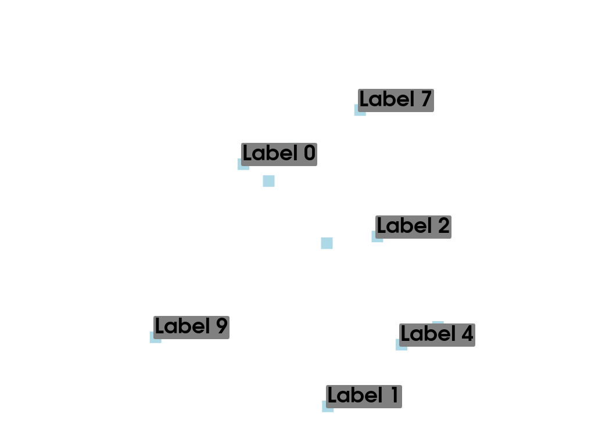
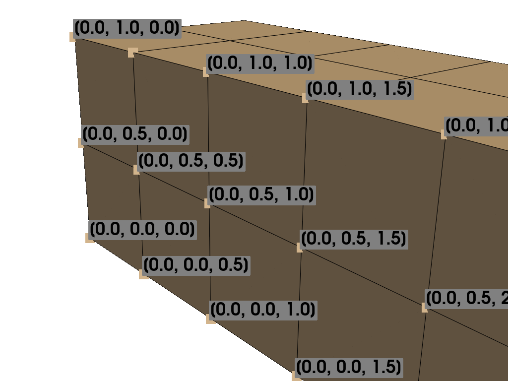
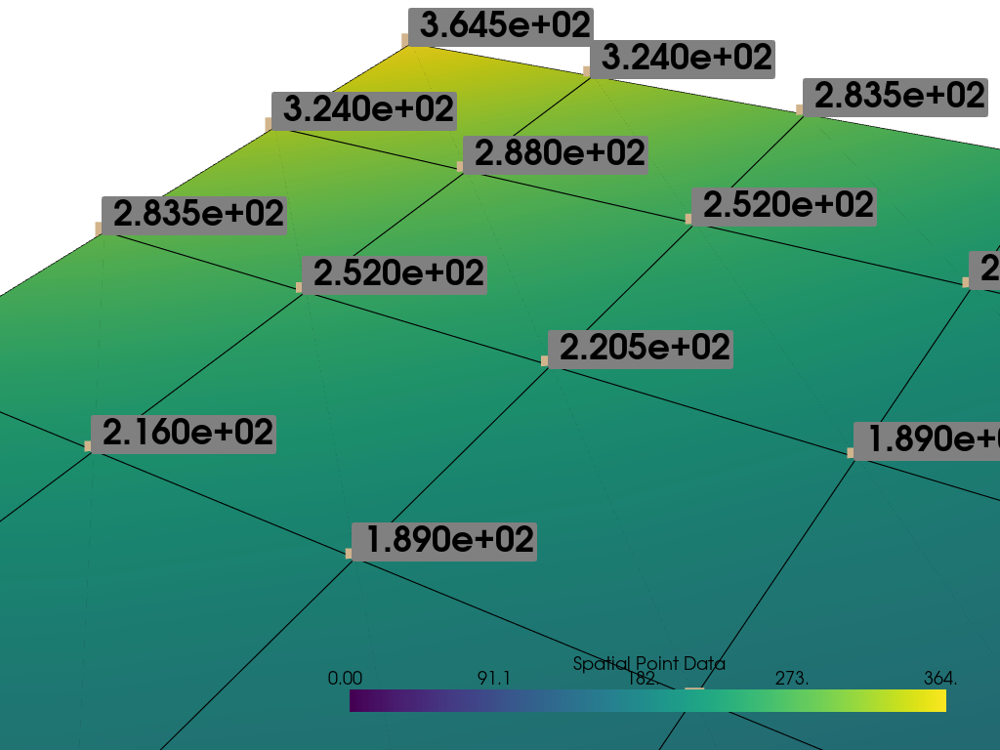

Note
Go to the end to download the full example code. or to run this example in your browser via Binder
Label Points#
Use string arrays in a point set to label points
import numpy as np
import pyvista as pv
from pyvista import examples
The pyvista.Plotter.add_point_labels() method makes it easy to add
point labels to a scene.
Help on function add_point_labels in module pyvista.plotting.plotter:
add_point_labels(self, points, labels, italic=False, bold=True, font_size=None, text_color=None, font_family=None, shadow=False, show_points=True, point_color=None, point_size=None, name=None, shape_color='grey', shape='rounded_rect', fill_shape=True, margin=3, shape_opacity=1.0, pickable=False, render_points_as_spheres=False, tolerance=0.001, reset_camera=None, always_visible=False, render=True, justification_horizontal=None, justification_vertical=None, background_color=None, background_opacity=None)
Create a point actor with one label from list labels assigned to each point.
Parameters
----------
points : sequence | pyvista.DataSet | vtk.vtkAlgorithm
An ``n x 3`` sequence points or :class:`pyvista.DataSet` with
points or mesh-producing algorithm.
labels : list | str
List of labels. Must be the same length as points. If a
string name is given with a :class:`pyvista.DataSet` input for
points, then these are fetched.
italic : bool, default: False
Italicises title and bar labels.
bold : bool, default: True
Bolds title and bar labels.
font_size : float, optional
Sets the size of the title font.
text_color : ColorLike, optional
Color of text. Either a string, RGB sequence, or hex color string.
* ``text_color='white'``
* ``text_color='w'``
* ``text_color=[1.0, 1.0, 1.0]``
* ``text_color='#FFFFFF'``
font_family : str, optional
Font family. Must be either ``'courier'``, ``'times'``,
or ``'arial``.
shadow : bool, default: False
Adds a black shadow to the text.
show_points : bool, default: True
Controls if points are visible.
point_color : ColorLike, optional
Either a string, rgb list, or hex color string. One of
the following.
* ``point_color='white'``
* ``point_color='w'``
* ``point_color=[1.0, 1.0, 1.0]``
* ``point_color='#FFFFFF'``
point_size : float, optional
Size of points if visible.
name : str, optional
The name for the added actor so that it can be easily
updated. If an actor of this name already exists in the
rendering window, it will be replaced by the new actor.
shape_color : ColorLike, default: "grey"
Color of shape (if visible). Either a string, rgb
sequence, or hex color string.
shape : str, default: "rounded_rect"
The string name of the shape to use. Options are ``'rect'`` or
``'rounded_rect'``. If you want no shape, pass ``None``.
fill_shape : bool, default: True
Fill the shape with the ``shape_color``. Outlines if ``False``.
margin : int, default: 3
The size of the margin on the label background shape.
shape_opacity : float, default: 1.0
The opacity of the shape in the range of ``[0, 1]``.
pickable : bool, default: False
Set whether this actor is pickable.
render_points_as_spheres : bool, default: False
Render points as spheres rather than dots.
tolerance : float, default: 0.001
A tolerance to use to determine whether a point label is
visible. A tolerance is usually required because the
conversion from world space to display space during
rendering introduces numerical round-off.
reset_camera : bool, optional
Reset the camera after adding the points to the scene.
always_visible : bool, default: False
Skip adding the visibility filter.
render : bool, default: True
Force a render when ``True``.
justification_horizontal : str, optional
Text's horizontal justification.
Should be either "left", "center" or "right".
.. warning::
If the justification is not default,
the shape will be out of alignment with the label.
If you use other than default,
Please use the background color.
See: https://github.com/pyvista/pyvista/pull/5407
justification_vertical : str, optional
Text's vertical justification.
Should be either "bottom", "center" or "top".
.. warning::
If the justification is not default,
the shape will be out of alignment with the label.
If you use other than default,
Please use the background color.
See: https://github.com/pyvista/pyvista/pull/5407
background_color : pyvista.Color, optional
Background color of text's property.
background_opacity : pyvista.Color, optional
Background opacity of text's property.
Returns
-------
vtk.vtkActor2D
VTK label actor. Can be used to change properties of the labels.
Examples
--------
>>> import numpy as np
>>> import pyvista as pv
>>> pl = pv.Plotter()
>>> points = np.array(
... [[0.0, 0.0, 0.0], [1.0, 1.0, 0.0], [2.0, 0.0, 0.0]]
... )
>>> labels = ['Point A', 'Point B', 'Point C']
>>> actor = pl.add_point_labels(
... points,
... labels,
... italic=True,
... font_size=20,
... point_color='red',
... point_size=20,
... render_points_as_spheres=True,
... always_visible=True,
... shadow=True,
... )
>>> pl.camera_position = 'xy'
>>> pl.show()
Label Point Cloud#
Let’s make a random point cloud and label each point in 3D space
# Make some random points
poly = pv.PolyData(np.random.rand(10, 3))
Add string labels to the point data - this associates a label with every node:
poly["My Labels"] = [f"Label {i}" for i in range(poly.n_points)]
poly
Now plot the points with labels using pyvista.Plotter.add_point_labels()
# (your code here, answer below)
plotter = pv.Plotter()
plotter.add_point_labels(poly, "My Labels", point_size=20, font_size=36)
plotter.show()

Label Node Locations#
This example will label the nodes of a mesh with their coordinate locations
# Load example beam file
grid = pv.UnstructuredGrid(examples.hexbeamfile)
Create plotting class and add the unstructured grid
plotter = pv.Plotter()
plotter.add_mesh(grid, show_edges=True, color="tan")
# Add labels to points on the yz plane (where x == 0)
points = grid.points
mask = points[:, 0] == 0
plotter.add_point_labels(points[mask], points[mask].tolist(), point_size=20, font_size=36)
plotter.camera_position = [(-1.5, 1.5, 3.0), (0.05, 0.6, 1.2), (0.2, 0.9, -0.25)]
plotter.show()

Label Scalar Values#
This example will label each point with their scalar values
mesh = examples.load_uniform().slice()
p = pv.Plotter()
# Add the mesh:
p.add_mesh(mesh, scalars="Spatial Point Data", show_edges=True)
# Add the points with scalar labels:
p.add_point_scalar_labels(mesh, "Spatial Point Data", point_size=20, font_size=36)
# Use a nice camera position:
p.camera_position = [(7, 4, 5), (4.4, 7.0, 7.2), (0.8, 0.5, 0.25)]
p.show()

Total running time of the script: (0 minutes 0.807 seconds)